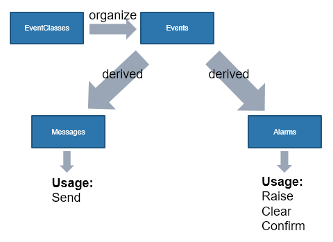
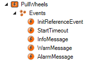

Event Logger
The event logger is large topic that is comprised of many pieces. The documentation covers many situations that are not necessary to start using the event logger. The SPT Framework library provides code that can help manage alarms and messages within a project.

TraceLog
FB_TraceLog
Uses FB_TcMessage from the Tc3_EventLogger library and adds further information including a time stamp, and the location (MM, EM, Component) where the message was created.
There is already an instance of FB_TraceLog within FB_BaseFB; therefore, no additional instances are needed.
Any function block that has a CyclicLogic method will also have a Trace method.
The logged messages are best used for debugging purposes. For example, at the end of the CASE statement in the Initialize method.
Be careful that the Trace method is only called once, otherwise the message will be logged every cycle.
1 2 3 4 | |

TMC Editor
Event Classes are groups of events (possibly for a theme e.g. SubMoulde or Component). Create Events using the TMC Editor in the Type System. The specific text of each event created within the TMC Editor can be customized; however, only one instance of an event can be active at a given time. For messages this is not an issue, but for alarms that will be raised and cleared it is important to note that only one alarm can be active at a time. For multiple alarms, each will need an entry within the TMC Editor.
The VFFS Demo project uses and Event Class for each Module, Submodule, and Component.
 |  |  |
Each of the above examples have a few standard events along with custom events that are specific to the module.
It is important to note that the first event in each, the 'InitReferenceEvent' is used to initialize the event class. This event is used by the CreateEvents method of the modules and is required by the SPT Framework.
Alarms
It is important to understand that while all alarms must be raised, their status must be checked in order for them to prevent any given functionality. Therefore, a raised alarm that requires no confirmation can also be used to log information. However, if the alarm is not cleared, then it will lock that Event Class and not allow any other alarms to be raised for it.


F_CreateAllEventsInClass
Initializes all instances of FB_TcAlarm within Alarms
Called from the CreateEvents method of MM, EMs, and Components as needed.
Accepts:
- an ARRAY if FB_TcAlarm
- the Name of the MM or EM to be added to the Alarm text
- the Name of the data type from the TMC Module Class
- InitReferenceEvent *This one is required*
1 2 3 4 5 6 | |
F_GetMaxSeverityRaised
Returns the highest severity level of any events currently raised within Alarms
For EMs (Submodules) called from CyclicLogic method
For MM called from SubModuleMonitor method
Accepts
- an ARRAY if FB_TcAlarm the same array as F_CreateAllEventsInClass
1 | |
F_RaiseAlarmWithStringParameters
Raises event associated with Alarm and passes String_n as arguments for contextual information.
Called from any method that needs to raise an alarm
Accepts
- an instance of FB_TcAlarm passed in as a VAR_IN_OUT to the method
- the Name of the data type from the TMC Module Class
- 2 strings for further details
1 2 3 4 | |
Dig into the source
Messages are logged events that are not alarms. They are used to provide status information to the user. They can be used to log the start and end of a state, or to log the start and end of a transition. Using Tc3_EventLogger.lib, an instance of the FB_TcMessage can be used to send messages to the event logger. Declare an instance of FB_TcMessage1 | |
1 2 3 4 | |
1 2 3 4 | |
Raise/Clear Alarms
The alarms are similar to messages, but they are used to indicate a problem that needs to be addressed. The alarm will be raised when the problem occurs, and then cleared/confirmed by the operator when the problem is resolved. Declare an Instance of FB_TcAlarm;
1 2 | |
1 2 3 4 5 | |